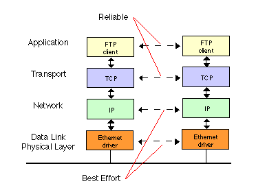

Network protocols are formal standards and rules that define communication between two or more devices over a network. They ensure that computer network devices can transmit and receive data using a common language regardless of their different designs, hardware or infrastructures. Some of the protocols are listed below.

Transmission Control Protocol / Internet protocol (TCP/IP) TCP/IP are the two protocols
that are used together and together they form the backbone protocol of the internet.
They can also be used for private networks i.e. intranets and extranets. When you are
set up with direct access to the Internet, your computer is provided with a copy of the
TCP/IP program TCP/IP has two major components: TCP and IP.
TCP is a popular communication protocol which is used for communicating over a network. It divides any message into a series of packets that are sent from source to destination and there it gets reassembled at the destination.
IP is designed explicitly as addressing protocol. It is mostly used with TCP. The IP
addresses in packets help in routing them through different nodes in a network until it
reaches the destination system. An IP address is a unique identifier for a node or host
connection on an IP network. An IP address is a 32 bit binary number usually
represented as 4 decimal values, each representing 8 bits, in the range 0 to 255 (known
as octets) separated by decimal points.
This is known as "dotted decimal" notation.
Example: 140.179.220.200
PPP (Point-to-Point Protocol) is used for communication between two computers using a serial interface, mostly a personal computer connected by phone line to a server. For example, an Internet Service Provider (ISP) may provide you with a PPP connection so that the ISP's server can respond to your requests, pass them on to the Internet, and forward your requested Internet responses back to you. It was basically designed to help communication between two systems through telephone lines as it supports transmission of network packets over a serial point to point link. PPP is sometimes considered a member of the TCP/IP suite of protocol
HTTP is designed for transferring a hypertext among two or more systems. HTML tags are used for creating links. These links may be in any form like text or images. HTTP is designed on Client-server principles which allow a client system for establishing a connection with the server machine for making a request. The server acknowledges the request initiated by the client and responds accordingly. HTTP has three important features. Firstly, it is connectionless. After a request is made, the client disconnects from the server and waits for a response. To process the request, the server has to reestablish the connection with the client. Secondly, HTTP is media independent. This means any type of data(text , images , sound , video etc.) can be sent by HTTP as long as both the client and server know how to handle the data content. Thirdly HTTP is stateless.This is because the server and the client are aware of each other only during a request. Afterwards, they get disconnected. Hence neither the client nor the browser can retain information between different requests across the web pages. HTTPS is abbreviated as HyperText Transfer Protocol Secure is a standard protocol to secure the communication among two computers one using the browser and other fetching data from a web server. HTTP is used for transferring data between the client browser (request) and the web server (response) in the hypertext format, same in case of HTTPS except that the transferring of data is done in an encrypted format. So it can be said that https thwart hackers from interpretation or modification of data throughout the transfer of packets.
FTP allows users to transfer files from one machine to another. Types of files may include program files, multimedia files, text files, and documents, etc.
SMTP is designed to send and distribute outgoing EMail.SMTP is a reliable and easy to set up protocol. Messages either get to a recipient, or there is an error message that explains why that wasn't possible. One of the purposes of an SMTP is that it simplifies the communication of email messages between servers. It allows the server to break up different parts of a message into categories the other server can understand. Any email message has a sender, a recipient or sometimes multiple recipients - a message body, and usually a title heading. Once a message goes out on the internet, everything is turned into strings of text. This text is separated by code words or numbers that identify the purpose of each section of an email. SMTP provides those codes, and email server software is designed to interpret these codes. SMTP has a major disadvantage that it is relatively easy to send a message with a fake sender address. This results in the spread of many email-based viruses.
POP3 is designed for receiving incoming Emails. Post Office Protocol 3 or POP3 is the third version of a widespread method of receiving email which receives and holds email for an individual until they pick it up. SMTP has a disadvantage that if the destination computer is not online, mails cannot be received. So the SMTP server receives the mail on behalf of every host and the respective host then interacts with the SMTP server to retrieve messages by using a client server protocol called POP3.
Telnet is the main internet protocol for creating a connection with a remote machine. It allows you to connect to remote computers (called remote hosts) over a TCP/IP network (such as the Internet). Once your telnet client establishes a connection to the remote host, your client becomes a virtual terminal, allowing you to communicate with the remote host from your computer with whatever privileges you may have been granted to the specific application and data on that host computer.
IRC protocol is used for chatting. It provides chatting between a group or between two individuals. It was developed by JarkkoOikarinen in Finland in the late 1980s. It is based on the client/server model. The IRC client sends and receives messages to and from an IRC server. The IRC server transports the message from one client to another. The IRC server is linked to many other servers to form an IRC network. IRC server identifies every user through a unique nickname. Each user is assigned a unique channel in case multiple discussions are taking place.
It enables the transfer of voice using a packet switched network rather than using a
public switched telephone network. By using VOIP software, phone calls can be done
using standard internet connection. This method of making phone calls is much cheaper
than conventional way because the service of Telecommunication Company is not
used.There are three different methods of VoIP service in common use today:
i.ATA -
ATA stands for analog-to-digital converted. It is used to connect the telephone device
to the computer. It takes the analog signals from the phone and converts them to digital
signals. These digital signals can be transmitted over the internet. Some providers also
are bundling ATAs free with their service.
ii. IP phones -
IP phones appear much like an ordinary telephone or cordless phone. They are directly
connected to the router or the LAN. They have all the hardware and software necessary
right onboard to handle the IP call. IP Phones are sometimes calledVoIP telephones,
SIP phones or Soft phones.
iii. Computer-to-computer -
It is the most easy and simplest way to use VoIP. The basic hardware requirements are
Computer, Internet, Speakers, Microphone. The only cost involved with computer - tocomputer VoIP is the
monthly ISP fee.